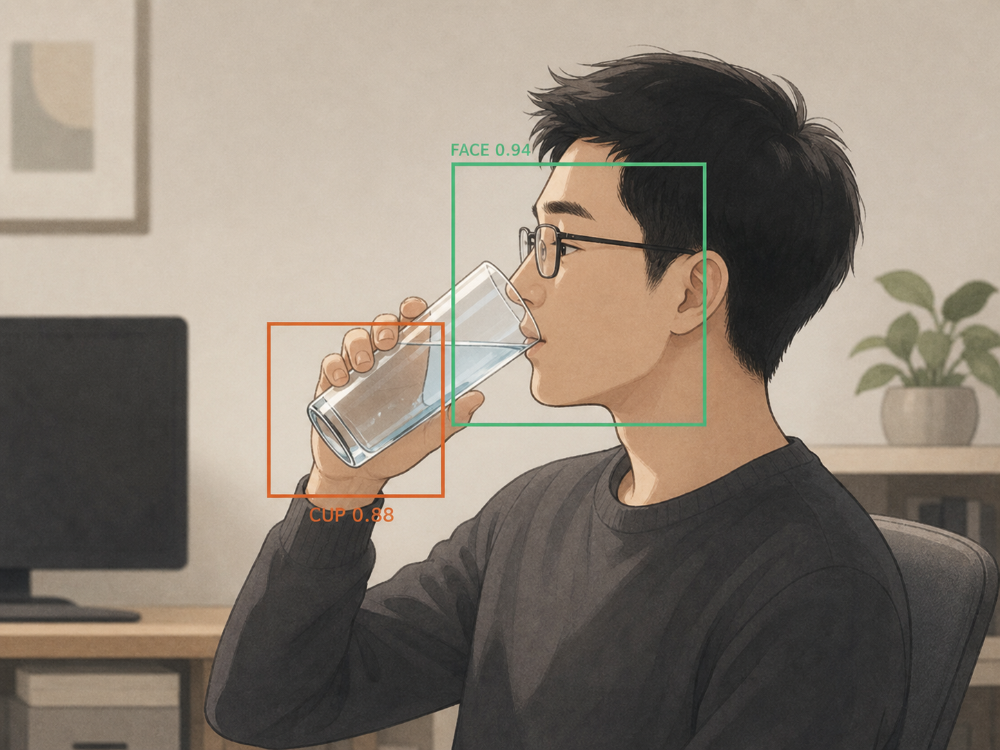

1h
滚到中央叩屏
连续久坐满 1 小时，猫缩成约 81px 的灰白毛球，只沿 X 轴慢慢滚到中央叩屏三次，再滚回原位。可随时关闭。
看你坐了多久、有没有喝水；锁屏立即算离开，短暂丢脸 30 秒内不断档。坐满 1 小时，小猫会缩成毛球滚到中央叩屏提醒。画面不出这台电脑。


全部本地跑，不联网、不上传、不写云。
连续久坐满 1 小时，猫缩成约 81px 的灰白毛球，只沿 X 轴慢慢滚到中央叩屏三次，再滚回原位。可随时关闭。
锁屏立即结束本次久坐；托腮或短暂丢脸 30 秒内回来仍接着算。双正脸分类器交叉确认，也更不容易把柜子当脸。
识别到你举杯喝水，猫也会举杯陪你喝。支持 50 / 150 / 300 / 500ml 快捷记录，误判时 Esc 或右上角直接关闭。
每天 2000ml 目标；喝水提醒默认 30 分钟，可选 20 / 45 / 60 / 90 分钟，并从最近喝水或提醒重新计时。
默认闭眼、低频抽帧省 CPU。点眼睛才展开摄像头画面；所有识别只在本机内存中完成，不上传、不存视频。
气泡或托盘一键打开：饮水趋势、坐时长、久坐超限次数和 7 天对比。日志与自包含报告都留在本机。
默认关闭，右键或托盘手动开始才录。每 60 秒抓一帧，停止时在本地合成 MP4；锁屏、离座、遮挡和暂停时不抓帧。
右键或托盘切换猫的样子，内置银灰经典和暖橘元气两套，日常八个状态整套跟随。选择记在本地设置里。
聚合本地 CSV 生成的自包含 HTML，内嵌 SVG 图表，无外部依赖。点气泡右边"📊 报告"或托盘菜单打开。
直接双击 dist\盯盯喵.exe 即可（旁边要有 models/）；
或跑源码：pip install opencv-python==4.10.0.84 pillow pystray。
双击 盯盯喵.vbs，小猫直接出现在桌角，全程无黑窗。托盘里也会出现小猫图标。
右键小猫或点托盘：看报告 / 睁眼 / 暂停 / 开机自启。开视频会议前先暂停，免得抢摄像头。
不监控你、不卖你数据，只安安静静替你盯住健康那点事。